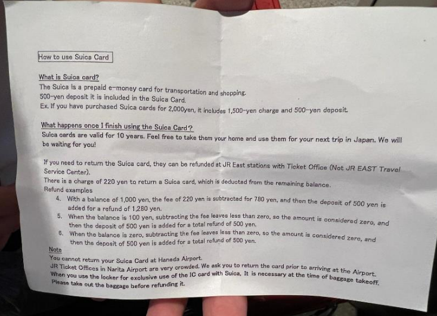

🚅Les transports🚅
1. JR Pass ou pas ?
La première question que vous vous posez est sûrement : dois-je prendre le JR Pass ?
La réponse est non et voici pourquoi :
En l’occurrence, je suis parti pour 14 jours et avec l’augmentation de 70% des prix du JR Pass on est à 496€ les 14 jours. Il faut noter que le JR Pass sert pour les Shinkansen (l’équivalent des TGV) et les lignes de métro JR seulement car vous prendrez sûrement des métros ou des bus qui n’acceptent pas le JR Pass.
Ci-dessous, je vous montre mes dépenses des trajets entre les villes que j’ai visité au Japon en 2024 :
- Tokyo (en shinkansen) → Nagoya = 11300 yens (≈70€)
- Nagoya → Kyoto = 5910 yens (≈36€)
- Kyoto → Nara → Uji → Kyoto = 1830 yens (≈11€)
- Kyoto → Osaka = 800 yens (≈5€)
- Osaka (en shinkansen) → Tokyo = 14720 yens (≈92€)
- Tokyo → Yokohama → Tokyo = 1720 yens (≈10€)
Total grands trajets : 36280 yens ≈ 227€
+ Métros & bus : 32792 yens ≈ 205€
Total global : ≈ 432€ (moins cher que le JR Pass, et en comptant les transports non compatibles avec le JR Pass).
Cependant, en revenant sur la dernière partie concernant l’itinéraire de l’avion, je peux même optimiser le trajet que j’ai fait ! Par exemple, en arrivant à Osaka puis en remontant progressivement par Kyoto, Nara, Nagoya jusqu’à Tokyo, cela permet d’économiser 14720 yens (≈92€) en supprimant le trajet Osaka → Tokyo (surligné en jaune ci-dessus). Heureusement qu’en 2025 c’est ce que j’ai pu faire avec ma famille et à 4 on a pu économiser 400€ dessus !
Je vous conseille donc de ne pas prendre le JR Pass car oui, ce dernier était rentable jusqu’en octobre 2023 mais plus maintenant à cause de nombreux facteurs comme la baisse de la valeur du yen.
👉 Article complet sur l’augmentation du JR Pass
2. Les cartes de transport
Je vous recommande vivement d’acheter une carte de transport au Japon afin de faciliter vos déplacements comme l’ICOCA ou la très connue Suica card. Cela vous évitera d’acheter vos billets à chaque fois à la borne, de remplir vos poches de pièces de monnaie, et surtout de gagner du temps. Vous pourrez les utiliser non seulement pour les métros et bus mais aussi dans la plupart des magasins et konbinis (7 Eleven, Family Mart, Lawson) ce qui est super pratique !
Vous pourrez faire le choix d’acheter votre carte physiquement dans des points d’informations (avec les petits logos « i », voir l’image ci-dessous) dans les gares ou vous pouvez aussi les acquérir sur votre téléphone en dématérialisée.
Si vous achetez la carte physique, il y aura toujours un acompte à déposer, j’ai par exemple payé 500 yens d’acompte pour ma carte Suica. C’est à vous de voir si vous voulez acheter la carte en physique afin d’en garder un souvenir ou non 😊
Concernant la carte Suica, elle est valable 10 ans si vous l’achetez et vous pouvez même vous faire rembourser votre carte avec l’argent dans votre solde avec un petit frais de 220 yens (1.30€ environ) mais vous pouvez ne pas avoir ces frais de retour dans certaines conditions. Je vous laisse prendre connaissances des détails pour ceux que ça intéressent sur la photo que j’ai prise ci-dessous.